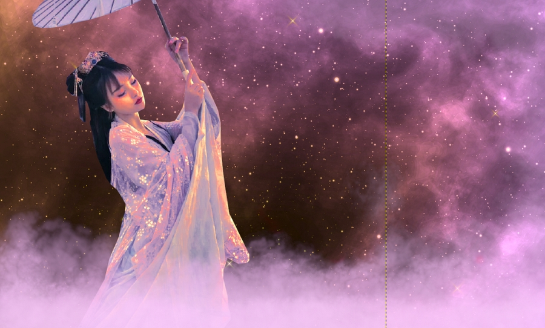

Este desafio é simples, mas audacioso, fazer uma bailarina chinesa dançar em meio às estrelas! As duas imagens constam na pasta de imagens com os nomes Woman e Cosmos. Nesta montagem você precisará fazer alguns ajustes na imagem e também deverá fazer uma pintura básica para simular as nuvens, basta escolher o pincel certo e configurar tamanho e opacidade conforme necessário.
